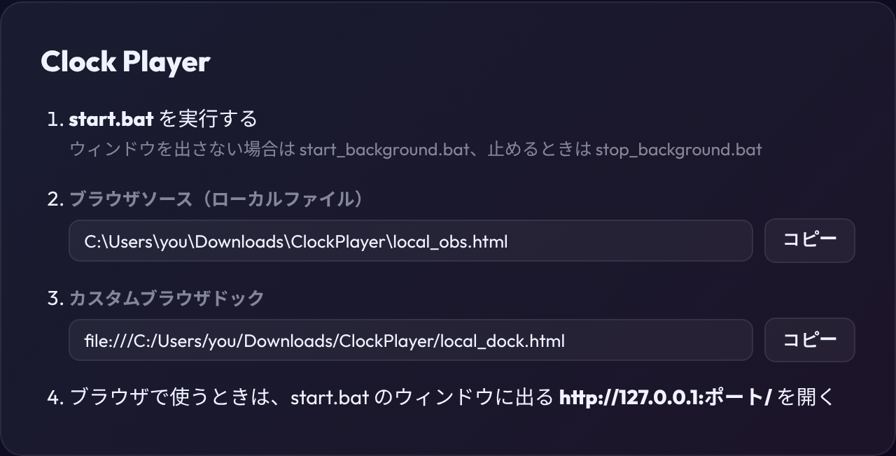
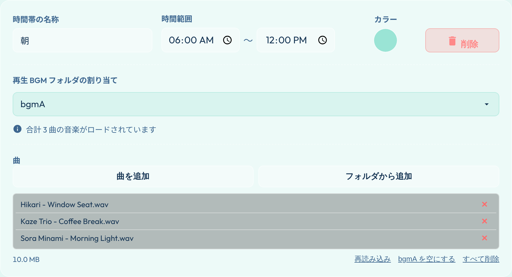
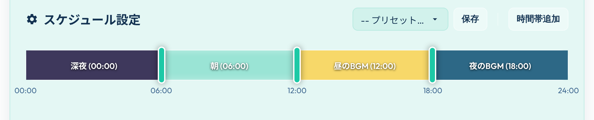
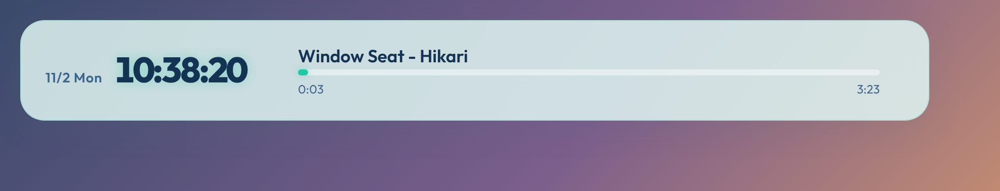
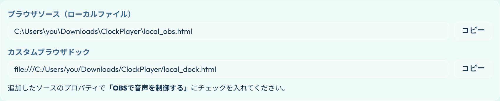
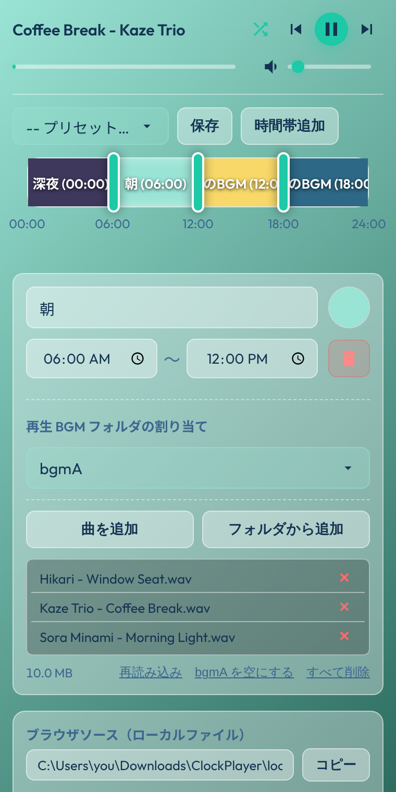

取扱説明書 / Manual
本アプリは、時間帯（朝、昼、夕方、夜など）に応じて、対応するフォルダに配置された音楽ファイルを自動的に切り替えて再生する、時計機能付きのWebブラウザ型ミュージックプレイヤーです。
曲と設定はダウンロードしたフォルダの中（bgm と data）に保存されるので、ブラウザのキャッシュが消えても失われません。Windows の PowerShell で小さなサーバーを動かすため、追加のインストールは要りません。
http://127.0.0.1:ポート/ をブラウザで開きます。index.html を直接開くと、この手順の案内が表示されます。

サーバーは初期設定のポート 8137 で起動し、ほかのソフトが使っていれば 8138〜8146 を順に試します。OBS に登録する入口（local_obs.html / local_dock.html）は開いた時点のポートを探して移るので、登録し直す必要はありません。OBS を開いたままサーバーを再起動してポートが変わった場合だけ、ソースとドックの再読み込みが必要です。初期設定のポートは data/server.json で変えられます。
.mp3, .wav, .m4a, .flac など）を選びます。曲は bgm フォルダの、その時間帯に割り当てたフォルダへコピーされます。曲名の横の ✕ で1曲ずつ、下の欄からフォルダごと・すべてを削除できます。

bgm/bgmA〜bgm/bgmF にエクスプローラーで直接入れた曲は、サーバーの起動時か、曲リストの下の 「再読み込み」 で読み込まれます。
■ スケジュールの変更:
設定パネル内の「24時間スライダー」の境界をドラッグして、時間帯の切り替え時間を調整できます。時間帯をクリックすると、名前・時間・色・割り当てるフォルダを下の欄で変更できます。

■ プリセット:
用意されたプリセットを切り替えるか、sample_preset.json を設定パネルの「ファイルを取り込む」からインポートして適用します。
設定パネルを OBS の「カスタムブラウザドック」に、プレイヤーをブラウザソースに読み込みます。音はブラウザソースで鳴り、ドックの再生ボタンや曲送り、設定の変更はブラウザソースにすぐ反映されます。先に start.bat でサーバーを起動しておいてください（OBS を先に開いた場合も、サーバーが起動すると自動でつながります）。

local_obs.html を選択します。
file:///…/local_dock.html を入れます。この2つの場所は、設定パネルの下の欄からもコピーできます。


20px の外側マージン が確保されています。950、縦幅はミニマルモードであれば 150 （通常表示の場合は 440 など）に設定することをおすすめします。
ダウンロードせずに、公開ページ（https://tomozow.github.io/ClockPlayer/）をそのまま OBS で使えます。
設定パネルは OBS の「カスタムブラウザドック」に、プレイヤーはブラウザソースに読み込みます。両者は同じページの保存領域を共有するため、ドックで取り込んだ曲と設定がブラウザソースにそのまま反映されます。
https://tomozow.github.io/ClockPlayer/index.html?dock を指定します。ドックでは時計や音量を省き、曲名・操作ボタンと設定だけの簡易表示になります。見た目は OBS のプレビューで確認してください。
https://tomozow.github.io/ClockPlayer/obs.html を指定します。この URL はドックの曲の登録欄の下にある「コピー」でコピーできます。追加したソースのプロパティで 「OBSで音声を制御する」 にチェックを入れると、OBS のミキサーで音量を調整できます。サイズと「OBSで音声を制御する」はローカル版と同じです。
取り込んだ曲は曲の容量分だけディスクを使います。リスト右の「✕」で1曲ずつ、「bgmA を空にする」でフォルダごと、「すべて削除」でまとめて削除できます。使用量はリストの左下に表示されます。
0.2.0 から、ローカル版はサーバーを通して使う形になりました。bgm フォルダの曲はそのまま使えます。OBS のブラウザソースは obs.html から local_obs.html に登録し直してください。設定は、以前の版の config.js をこのフォルダに上書きコピーしてから初めて起動すると引き継がれます。ブラウザに保存していたプリセットは引き継がれないので、以前の版で書き出して取り込んでください。